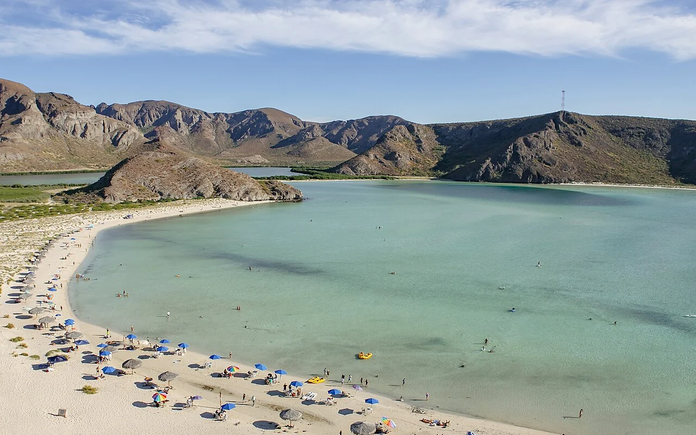

Balandra
La Paz, Mexique · kayak, paddle

Au nord de La Paz, Balandra réunit une baie, des plages et un paysage de collines désertiques. Une étape de kayak dans un espace naturel protégé, dont les modalités d’accès sont à vérifier avant la visite.
- Lieu
- La Paz, Mexique
- Niveau
- Variable selon les conditions
- Activités
- kayak, paddle
- Type d'eau
- Mer / océan
- Coordonnées
- 24.32, -110.33 (position approximative du secteur)
Ouvrir dans Ocean Buddy Télécharger sur l'App Store
Source : Office du tourisme de La Paz.